|
ROMANIA IN THE WORLD WAR I |
Romania takes no part in the
First Balkan War of 1912-13, fought to drive the Ottomans out of the western
Balkans. In the Second Balkan War of June-July 1913 it gains Southern Dobrogea
from Bulgaria.
At the outset of WWI Romania remains neutral despite its alliance commitments to
Austria. It joins the war on the Allied side in Aug. 27, 1916 (by declaring war
on Austro-Hungary) after receiving territorial promises.
On the same day the High Command Headquarters issued decree
No.2798 proclaiming a state of siege. As a consequence of this, censorship
procedures were established with the first day of censorship being August 27
1916. In the capital town of each county a censorship office was established by
the military. All the mail from a particular county had to be censored at the
capital town.
 |
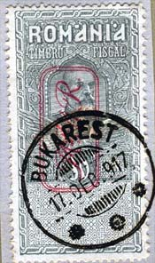 |
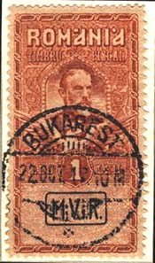 |
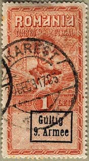 |
| German Occupation Stamps, cancelled in Bucharest in 1917 | |||
Romanian forces move into Transylvania but are driven
out within two months. By Jan. 1917 German-Austrian and Bulgarian offensives
have overrun most of the country Before the occupation of Bucharest, the
Romanian government decided on November 12/25 1916 to move all the official
institutions to Iasi which was the "historical capital" of Moldavia, in lands
held by their Russian ally. Russia leaves the war early in 1918, and
Romania is forced to accept the Treaty of Bucharest of May 7, 1918 that makes
the country a client of Germany and Austria.
Please see below a Romanian banknote issued in 1917 by
the Romanian General Bank, that is "backed by a depot in cash at the Bank of the
German Empire, Berlin."
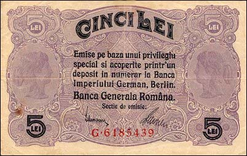
Romania yields control of the Carpathian passes to Austria and cedes Dobrogea and the mouths of the Danube partly to Bulgaria, partly to a condominium of Germany, Austria and Bulgaria. The Central Powers accept Romania's acquisition of Bessarabia from Russia. Please see below a German occupation stamp, 1917, and a send/replay stationary card, June 1917, both overprinted Rumänien (Romania).
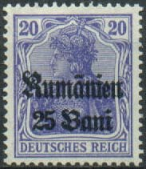 |
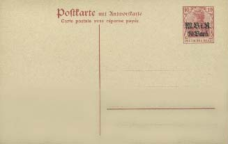 |
Romania ends the war
with high casualities and little glory, but it has an intact army and no strong
neighbors. It is able to acquire all of Bessarabia and the Bukovina, all of
historic Transylvania with adjacent lands to the west, and most of the Banat. As
a result, Romania after 1919 is twice the size of pre-war Romania. Romania's
monarchic constitutional order survives the war with little immediate change.
Most of Romania's borders today are those of 1919, but
WWII costs it not only Bessarabia and northern Bukovina (annexed by Soviet
Russia) and southern Dobrogea (restored to Bulgaria), but for 40 years also its
freedom. After:
http://dmorgan.web.wesleyan.edu/balkans/wwone.htm)
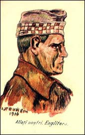 |
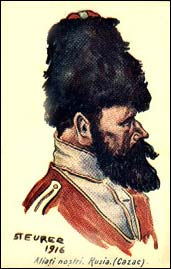 |
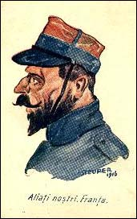 |
Because the Romanian PA hasn't issued special stamps related to the WWI during the war, we show some interesting postcards, displaying foreign soldiers and the common text: Our Allies. They were designed by Steurer. In the first row soldiers from: England, Russia (Cossack), and France.
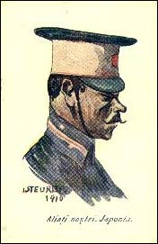 |
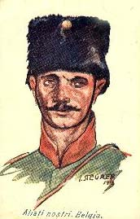 |
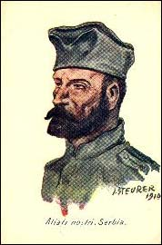 |
The above soldiers are from: Japan, Belgium, and Serbia.
Link: Romania in WWII
| Created
01/18/2003. Revised:
08/02/03. Copyright © 2003 by Victor Manta, Switzerland. All rights reserved in all countries. |